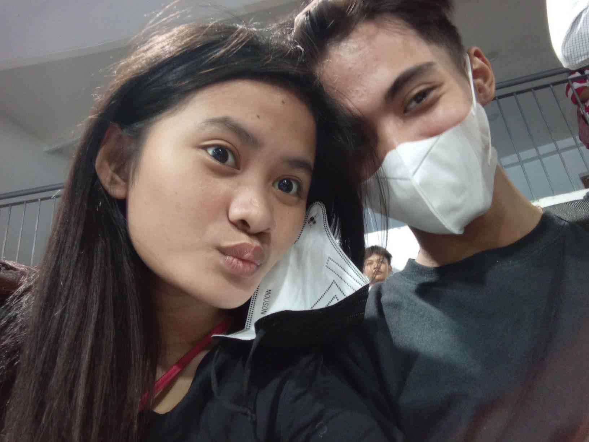

UNFORGETTABLE MOMENTS

It is normal to make mistakes and have regrets about them. It is part of the human experience, and we all make errors in judgment, especially when we are trying to learn and grow. However, the fact that you still make mistakes even after a year does not mean that you are not improving. The important thing is to learn from your mistakes, reflect on what went wrong, and try to do better in the future.
Having a favorite person in your life who inspires you to keep going and not give up is a great source of motivation. This person can provide support, guidance, and encouragement when you need it most. Their presence in your life can help you stay focused on your goals, and their example can show you what is possible if you work hard and stay dedicated.
Remember, success is not about never making mistakes; it's about learning from them and continuing to move forward. So, embrace the lessons you have learned from your past mistakes, and use them to fuel your determination to achieve your goals. With the support of your favorite person, you can continue to grow, learn, and thrive, even in the face of adversity.